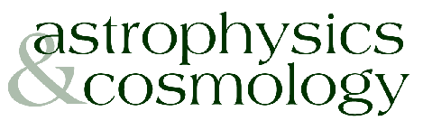

<p>
<& /mason/image.comp, filename=>'Microlensing.jpg', caption=>'A microlensing image used in Astrophysics & Cosmology. ', alt=>'Microlensing', credit=>'photo used by permission' &>

Particle astrophysics and cosmology is a growing field of research at the University of Minnesota, Twin Cities. This research includes searches for high energy cosmic rays (Mike DuVernois), experimental studies of cosmic microwave background radiation (Shaul Hanany), observations of galaxy formation, research into the formation of the first stars and metal abundances at high red-shifts (Evan Skillman), theoretical studies of big bang nucleosynthesis and early universe physics (Keith Olive), theoretical work in nuclear astrophysics (Yong-Zhong Qian), and work on gravitational lensing (Lilya Williams).
